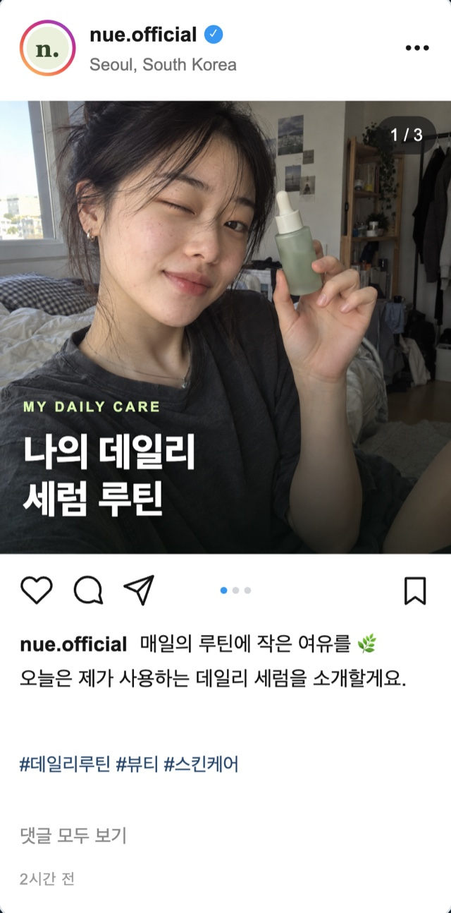
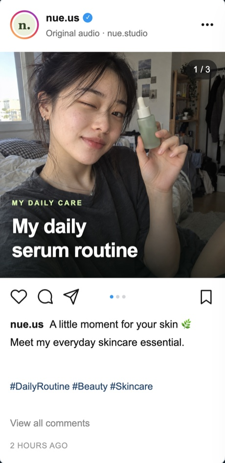
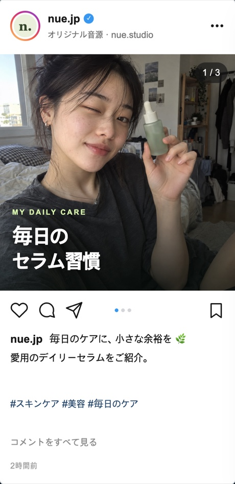
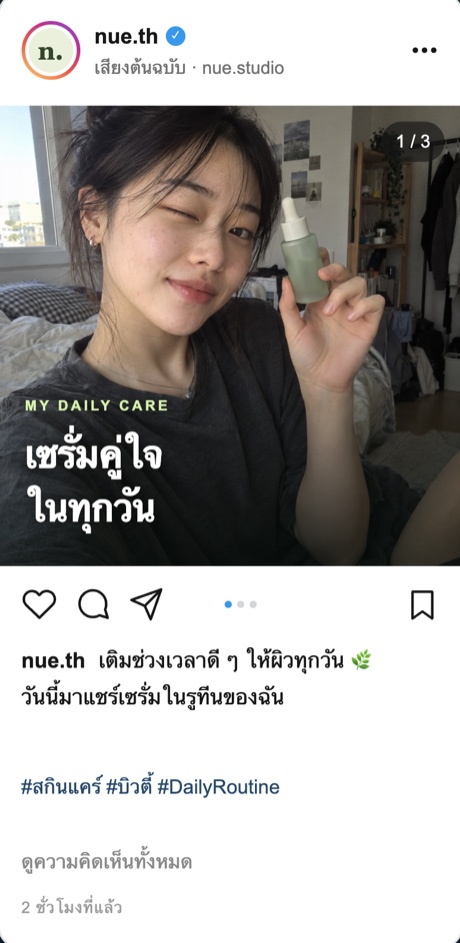

01
계정 운영의 불안정성
VPN 기반 운영
접속 환경에 따른 계정 관리와 국가별 노출 관리가 어렵습니다.
국가별 언어로 콘텐츠를 전하고, 브랜드 메시지는 일관되게 유지합니다.




검색부터 SNS, 영상과 후기까지. 고객은 여러 채널을 오가며 브랜드를 발견하고 비교합니다.
고객은 SNS에서 새로운 브랜드를 발견하고,
제품 사용법과 실제 구매 후기를 확인합니다.
공식 계정의 콘텐츠를 살펴보고 비교하며,
구매에 필요한 정보를 얻고
브랜드에 대한 신뢰를 쌓습니다.
70%
전 세계 온라인 쇼핑객 10명 중 7명은
소셜미디어를 통해
브랜드를 접하거나
제품을 구매한 경험이 있습니다.
검색과 SNS, 후기와 공식 계정을 오가며 구매를 결정합니다.
검색·SNS로
브랜드 발견
사용법·후기·
공식 계정 확인
경쟁 브랜드와
비교
쇼핑몰·공식몰에서
구매
구매 여정 예시 · 탐색 순서는 고객마다 다를 수 있습니다
브랜드 자산 진단
계정부터 콘텐츠, 운영과 분석까지 점검해보세요.
진출 국가의 SNS 계정이 있나요?
현지 고객의 언어로 소통하나요?
브랜드를 소개할 콘텐츠가 있나요?
콘텐츠를 꾸준히 게시하나요?
국가별 고객 반응을 확인하나요?
KEY MEASURE성공한 글로벌 브랜드는
단순히 해외 계정을 개설하는 데서 끝나지 않습니다.
진정한 글로벌 확장은 채널 운영의 단순한 반복을 넘어,
현지 문화에 밀착한 오가닉 콘텐츠의 지속적인 축적과
국가별 반응 데이터 기반의 운영 고도화를 통해 완성됩니다.
고객이 브랜드를 발견하고 신뢰할 수 있도록 국가별 채널과 현지어 콘텐츠를 운영합니다.
꾸준히 쌓인 콘텐츠와 고객 반응 데이터는 글로벌 진출의 기반이 됩니다.
국가별 SNS 공식 계정으로 고객 접점 확보
현지 언어와 문화에 맞춘 브랜드 메시지 전달
정기적인 콘텐츠 발행과 고객 반응 데이터 축적
BRAND ASSET
콘텐츠와 데이터가 쌓이는 브랜드의 기반
01
접속 환경에 따른 계정 관리와 국가별 노출 관리가 어렵습니다.
02
현지 인력 채용과 운영 체계 구축에 비용이 들고, 원격 관리 부담도 커집니다.
03
대행사마다 운영 방식이 달라 브랜드 일관성을 유지하고 데이터를 통합하기 어렵습니다.
OUR SOLUTION
콘텐츠 준비부터 채널 운영, 성과 분석까지 하나의 체계로 연결합니다.
콘텐츠를 수급하고, 현지 언어에 맞춘 번역과
제목·해시태그 최적화를 진행합니다.
국가별 업로드 일정을 관리하고,
글로벌 SNS 운영과 계정 상태를 점검합니다.
국가별 성과 데이터를 모아 분석하고,
운영 현황을 리포트로 제공합니다.
기본 운영에 필요한 서비스를 제공하고, 필요에 따라 콘텐츠 제작과 광고 운영을 더합니다.
기본 포함
추가 선택
※ 별도 견적
추가 선택
※ 별도 또는 Enterprise 포함
※ 콘텐츠 제작은 운영 서비스와 별도로 계약하며, 제작범위와 수량에 따라 별도 견적을 산정합니다.